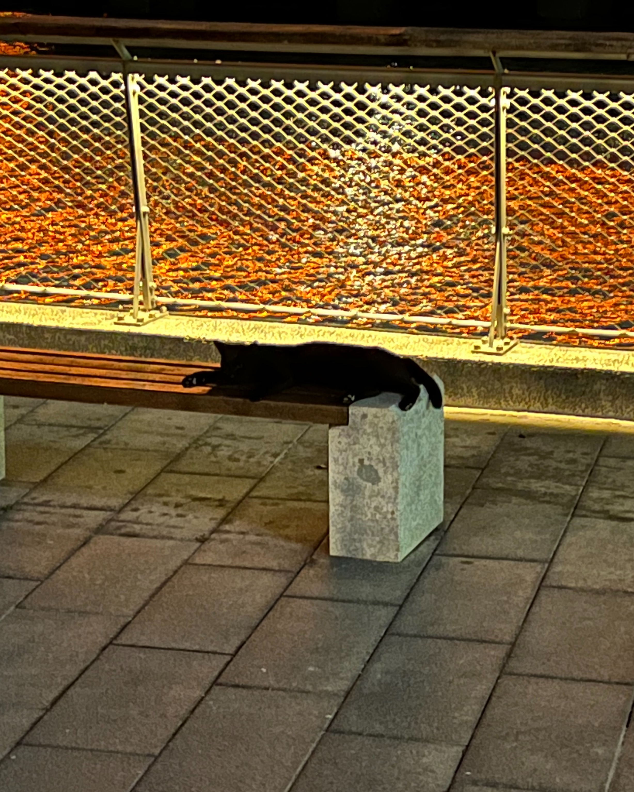
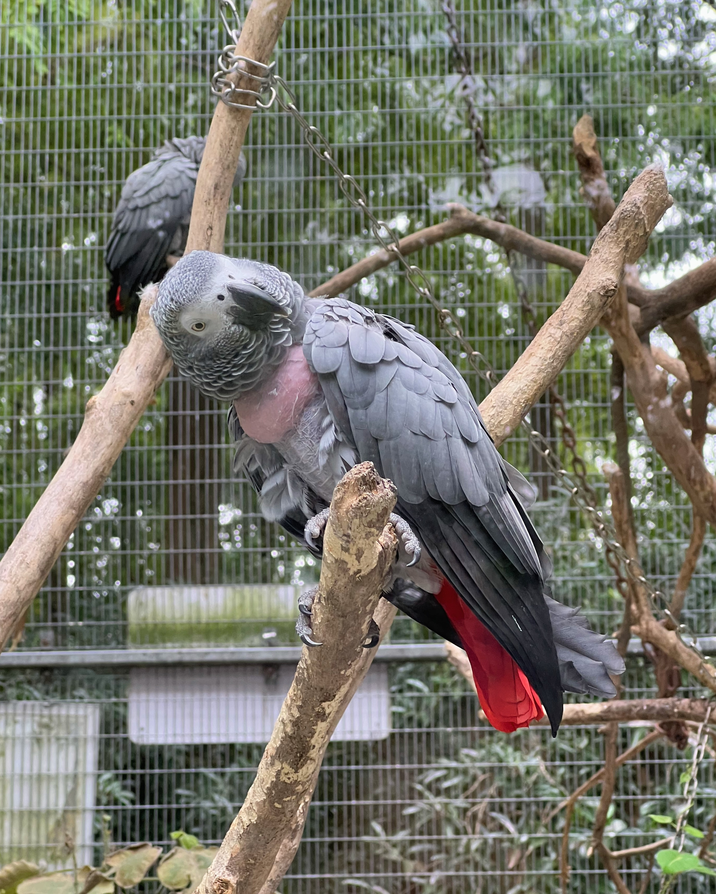
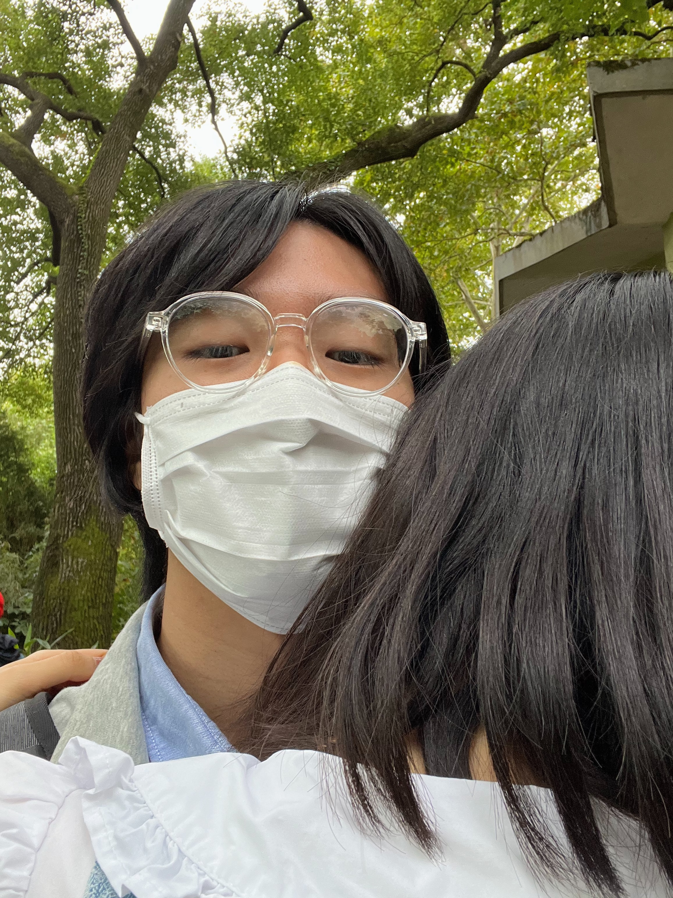
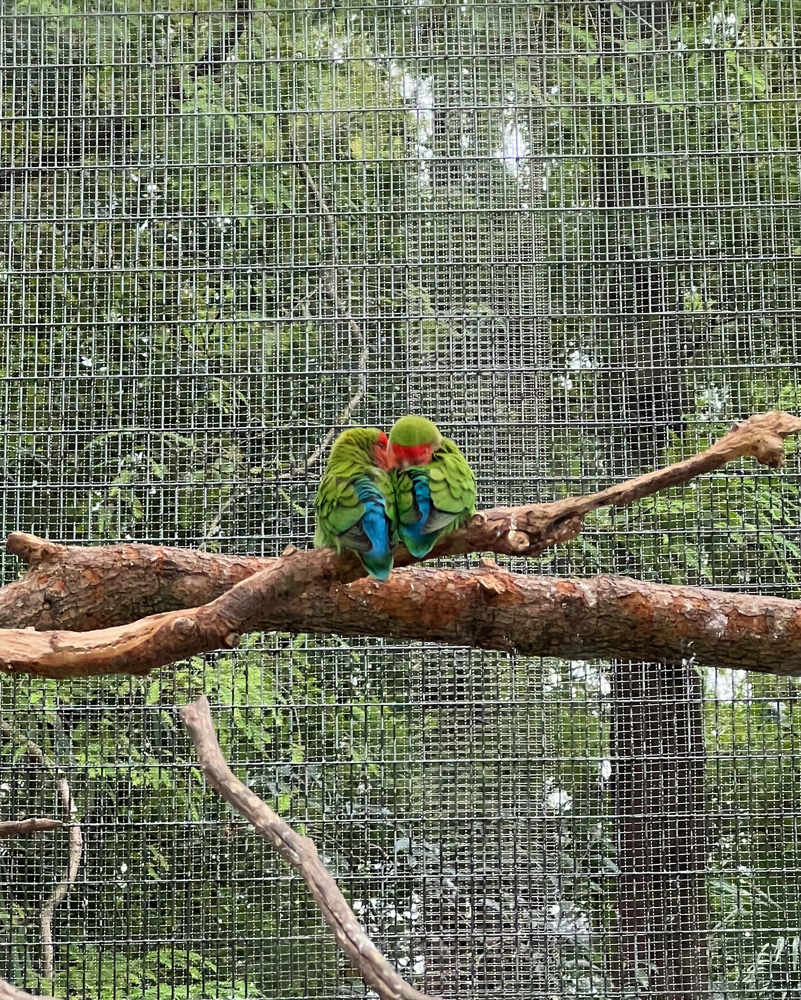
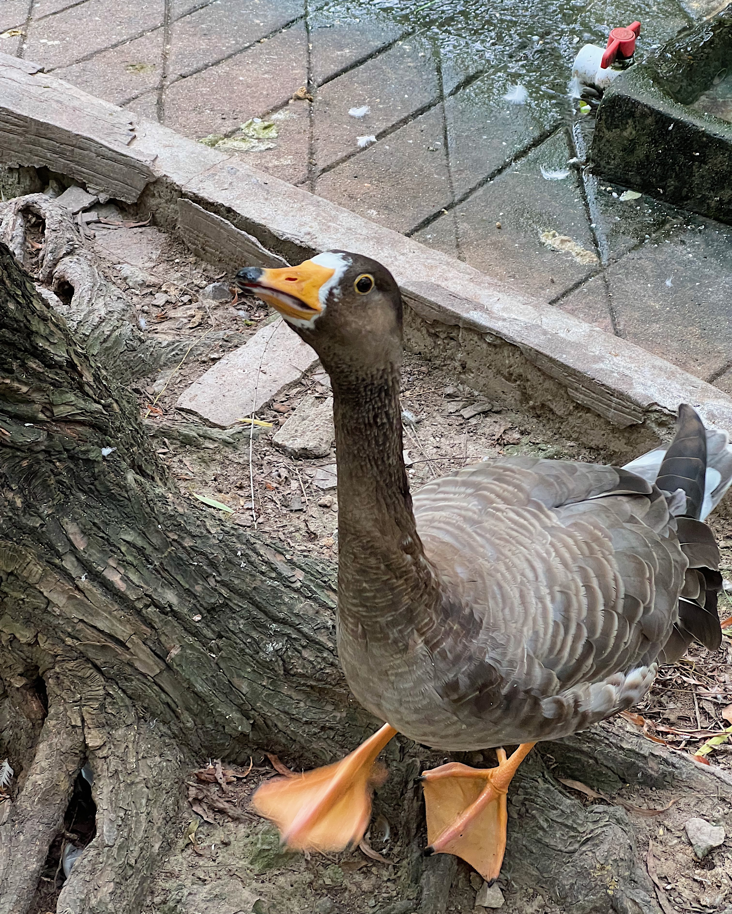

22-10-16
在开学遭遇了一周的封楼后，我们在国庆节的第二天晚上见了面。我搭乘18号线来到那个酒红色的地铁站，在复旦门口等了她很久她才出现。她让我帮她拿行李送她回家，我觉得这件事很可爱，有一种从学校把小朋友接回家的感觉。像约定好的那样我们见面给彼此了大大的拥抱。她说话的声音很轻很轻，她掩盖不住她的疲惫——她每天睡得很早但是起的更早，再加上她一直忙着学习，连玩儿两天，所以我想疲惫也是很合理的。
但是我最后忍不住在微信上和她说我的小情绪。把问题说出是解决问题的一半，我感觉松了一口气，但是似乎又凶到她了。我很自责，所以最后还是我哄了哄她。
第二天白天我玩儿一个很恐怖的剧本杀，整个人都提心吊胆的。我本不打算在晚上出门，但是我还是约了她运动，因为我想见她。我想和她去更多的地方，但是听上去她有很多工作要做。我们在民生路地铁站见面，打算扫共享单车去滨江边上。她摇摇晃晃不会骑车的样子，还有她全程非常慌张地问我下一步要去哪儿的样子，很让人有保护欲。
我们来到了红色的杨浦大桥下，往常梦幻的场景在此时显得有些阴森。她问我今天的剧本杀怎么样，我便让她玩了我们玩儿的那个海龟汤，她几乎猜了半小时才猜出来。我不想再强化关于这个本的记忆，于是我们开始跑步。我感觉她的表现明显比上次要好，配速快了11秒，可能是因为天气闷热所以少跑了几百米。我们跑下一个旋转步道，在江边的座位上休息。
她整个人气喘吁吁的，搂着我的脖子，几乎把所有重量压在我的身上，我很享受这个感觉。我亲吻着她的嘴唇，揉揉她的脑袋，她看上去快要睡着了。我打算把那天没有说出口的emo发言和她说。在她的开导面前，我像个难以教化的文盲。但最重要的是，她并没有因此而停止安慰我——她抱抱我，和我说了一遍又一遍，把一句话正过来倒过去地说。或许我只是想要她的关心，想要她成为那个世界上最后一个愿意安慰我的人，想要她听听我的心里话，我很自私地这样想。风逐渐起势，看样子冷空气要来了，这个夜晚更加阴森恐怖。
我快速地哭了一下，听着喧嚣的风声，和她紧紧地靠在一起。我害怕未来，又不会珍惜当下，有的时候我就会陷入自己的困境走不出来。她说陈老师看了医生后就变好了，所以劝我也去看看。我说我应该还间歇性地抱有对生活的热情，或者你带我去宛平南路600号看看吧。
我们找了一路的共享单车，此时她的骑车技术已娴熟了不少。
第三天，终于，我们等到了一个凉爽的日子，我约她去了我想去很久的上海动物园。因为我已经厌倦了看“人类”，我想看点别的生物。
然而事实是，动物园里的人类数量远远超过了动物们。人类幼崽的喧闹声给我们的约会带来了不愉快的背景音。不过我那天表现得非常有精神：我穿了一件半拉链的灰色卫衣，搭配深灰长裤和白鞋，特意在临走前刮了刮胡子，折好了小狗戒指。因为我想，前两天的气氛都不算热烈高涨，不如今天哄哄她开心吧！我和她说在动物园里要拉好我的手，我担心她走丢。
然而她的手很凉，凉得我错以为冬天已经抵达。我问她是不是很冷，她总是用一些别的话搪塞过去。直到我听见她擤了擤鼻涕，我把身上的卫衣脱下来给她穿上。她看上去美滋滋的，说穿上我的衣服就变得很嚣张、很臭屁。她暖和了不少，所以人也变得很活泼，这似乎是这段时间来我见过的最开心的她，我悬着的心终于放下。
显然，她爱上了我的衣服，自从她穿上我的衣服后就没有停止讨论过：我的衣服有三个兜，面料也很舒服，可翻领可立领，没有帽子。她甚至打开淘宝找了同款，甚至去了世纪汇的GAP仔细逛了一圈。她撒娇说要我的衣服，我也很想给她我的衣服。
看到喜欢的动物，我就想拉着她一起自拍。我最喜欢的是那张我们和火烈鸟的照片。我真的太喜欢火烈鸟了，我很喜欢它们的浅橘色和优雅的S型脖子。你知道吗，当两个火烈鸟靠近的时候，它们的脖子和头就会拼成一个爱心。可是火烈鸟看不到自己拼成的爱心，它们只负责炫耀。那么当我和她靠近的时候，同样会有爱心出现吗，或许这事只有火烈鸟们知道吧～
我们和火烈鸟合了照，我觉得这是一个好兆头。火烈鸟是一种大型鸟类，习性温顺，可以活很久。重要的是，它们对于爱情忠贞不渝。据说，火烈鸟一生只会有一个伴侣。如果不做人的话，我想做一只火烈鸟，如果可以的话我希望她是另外一只火烈鸟。不过我想到，我们经常把头靠在一起，那么我们其实已经是一对火烈鸟恋人吧！
晚上送她回家的时候，我们在她小区的小门前抱了很久很久，直到下起了不小的雨。我打起了伞，继续恋恋不舍。她在雨中戴上了小狗戒指，却不小心把它弄到了地上，幸好小狗没有受伤，我简单维修了一下，就又把戒指给她戴上了。她不用担心保修的问题，我可以保修一百年。她说她会陪着我，一切都会好的。我看到她开心的样子，我也很开心。这几天我很少见到她如此开心，我相信一切会好的，我们未来不会分开。
毕竟我们是一对火烈鸟恋人。
接小朋友回家
猫猫也很困啊
歪头鹦鹉
嘿嘿
学我们
可爱鸭鸭
评论区